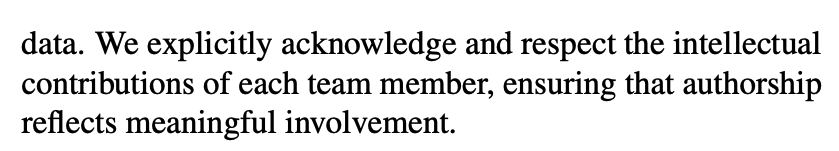
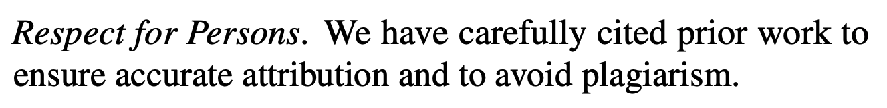
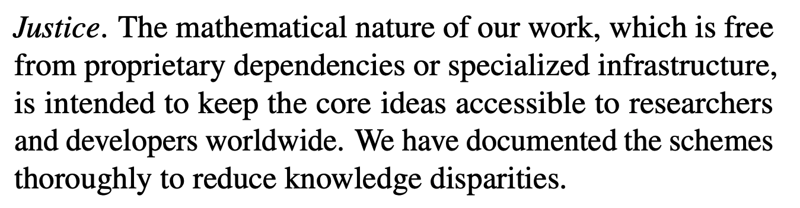
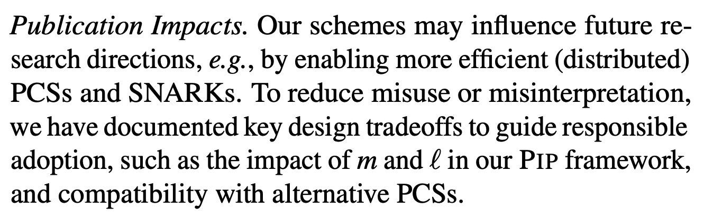
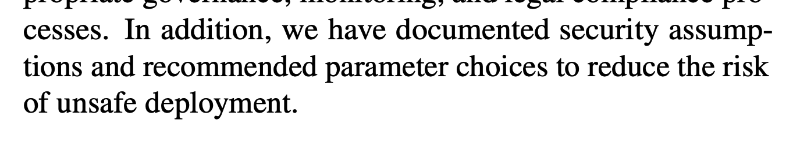
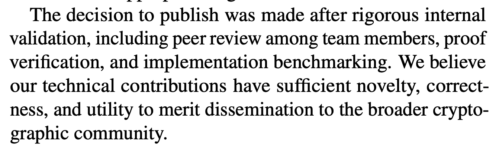

About the example ethics appendices in the USENIX Call for Papers
TL;DR
The USENIX Security ‘26 Call for Papers has some examples of papers with well-written ethics appendices, which are now required to submit to the conference. I think the example ethics appendix for cryptography is weird, and indicates that the current version of the Ethics Guidelines is not well-suited to the field of cryptography.
Introduction
As of this year, the USENIX Security conference requires all authors to write an “Ethics Appendix”, which discusses the ethical implications of their work. The Call for Papers contains an ethical framework based on the Menlo Report, which they recommend that authors follow. At a high level, it requires you to determine a set of “stakeholders” that might be impacted by your work, discuss potential harms of your work, how you mitigated them, and why you decided to publish the work.
They give examples of ethics appendices that they think are well written. One is for my area (cryptography). The example Ethics Appendix is in this paper on pages 16-17. As an initial disclaimer, I think this is a good paper on zk-SNARKs! I think this ethics appendix is the result of honestly trying to write an ethics appendix per the guidelines and honestly responding to incentives.
Arguments made in the Ethics Appendix
I will highlight a few arguments made in the ethics appendix which I think are weird and do not represent the stated goals of the ethics appendices. Some of the points raised in this ethics appendix make sense (like how better zk-SNARKs have both positive and negative uses), but they are padded out with a bunch of points which seem unnecessary. I have quoted a bit more than half of the points made in the ethics appendix below:
On crediting the research team

The authors argue that their work is ethical because they properly acknowledged the contributions of everybody who worked on the project.
On “Respect for Persons”

“Respect for persons” is one of the axes of ethical work from the Menlo Report/the CfP. The authors argue that their work achieves “Respect for Persons” because they properly cited prior work.
On “Justice”

“Justice” is another axis from the Menlo Report, and the authors argue that their work is just because they throughly documented the schemes in their work.
On “Public Impact”

The authors argue that they reduced the potential negative impacts of their work by properly documenting design tradeoffs.
On “Potential Harms”

The authors again argue that their work is ethical because they properly documented their scheme.
On “Decision to Publish”

The USENIX Security CFP asks authors to discuss why they decided to publish a given work. In this excerpt, the authors state that they decided to publish because they checked that their work was correct and they believe it’s novel.
Review
To recap the arguments made by the authors which I quoted, they state that their work is ethical because they properly credited everybody involved in the project, because they properly cited prior work, and because they properly documented the scheme they constructed. They also state that they ethically decided to publish their research because they checked that it is correct/novel. These are baseline research practices! These feel like the authors were trying to write something underneath each required point in the ethics appendix. In my view (and I think most people’s), ethics appendices should be about the nontrivial ethical implications of your work, and not a box-checking exercise. By linking this paper’s appendix as an example of a well-written ethics appendix, we are partially endorsing this type of writing. I tried 2 AI detectors (Pangram/GPTZero), and both of them thought this appendix was at least partially AI-generated, though I don’t think this is the most important part of the discussion.
Suggestions for improvement
As previously stated, I don’t think the authors of this paper are bad actors. I am not naming them/the paper so this article doesn’t come up in Google searches for the author’s names. I think they wrote this ethics appendix by honestly trying to follow the guidelines in the USENIX Security Call for Papers.
Consequently, I think this is good evidence that current guidelines for ethics appendices need to be updated. Here are some suggestions that I think could improve the situation:
- The USENIX framework has a lot of headings you need to hit (Stakeholders, Ethical principles, Harms, Mitigations, Decision). I think it would be helpful if you could just leave out the discussion of some of these points if they don’t apply to your work. I think the Ethics Appendix in this paper would have been a lot stronger if the authors felt like they could just discuss the relevant points (like dual-use potential of zk-SNARKs) and omit points where there isn’t an interesting discussion.
- As my advisor Gabe has suggested, maybe the requirements for these ethics appendices should be adjusted per-field, since the current ethics guidelines seem pretty tailored to systems security. Many cryptography papers just write proofs and algorithms, which don’t map that cleanly onto the terms/categories in the Menlo Report. I still think it’s important to discuss ethics, and it would be good to have a more cryptography-focused version of these ethics guidelines.
I hope the discussion in this post serves as a good explanation of my issues with the current ethics guidelines/examples in the USENIX Security CfP.
As a parting thought, this blog post reminds me of a discussion I had about this article in my Freshman Writing Seminar at Cornell. This article is part of a similar discussion about ethics requirements for research from the academic linguistics community. One argument that comes up in this paper is that these additional ethics requirements are typically written by senior professors, while graduate students are typically the ones who actually have to do them. Graduate students typically don’t have a seat at the table when defining these extra requirements. If you have a say in this process, please be empathetic to the time and energy of the graduate students who actually have to do this work.